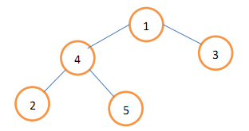
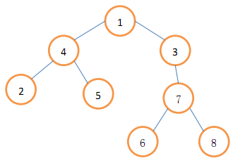
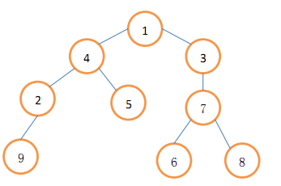

第一行三个整数：N,M,Q，以空格隔开，N表示模板树结点数，M表示第(2)中的循环操作的次数，Q 表示询问数
量。接下来N-1行，每行两个整数 fr,to，表示模板树中的一条树边。再接下来M行，每行两个整数x,to，表示将模
板树中 x 为根的子树复制到大树中成为结点to的子树的一次操作。再接下来Q行，每行两个整数fr,to，表示询问
大树中结点 fr和 to之间的距离是多少。N,M,Q<=100000
小A想做一棵很大的树，但是他手上的材料有限，只好用点小技巧了。开始，小A只有一棵结点数为N的树，结
点的编号为1,2,…,N，其中结点1为根；我们称这颗树为模板树。小A决定通过这棵模板树来构建一颗大树。构建过
程如下：（1）将模板树复制为初始的大树。（2）以下(2.1)(2.2)(2.3)步循环执行M次（2.1）选择两个数字a,b，
其中1<=a<=N，1<=b<=当前大树的结点数。（2.2）将模板树中以结点a为根的子树复制一遍，挂到大树中结点b的下
方(也就是说，模板树中的结点a为根的子树复制到大树中后，将成为大树中结点b的子树)。（2.3）将新加入大树
的结点按照在模板树中编号的顺序重新编号。例如，假设在进行2.2步之前大树有L个结点，模板树中以a为根的子
树共有C个结点，那么新加入模板树的C个结点在大树中的编号将是L+1,L+2,…,L+C；大树中这C个结点编号的大小
顺序和模板树中对应的C个结点的大小顺序是一致的。下面给出一个实例。假设模板树如下图：

根据第(1)步，初始的大树与模板树是相同的。在(2.1)步，假设选择了a=4，b=3。运行(2.2)和(2.3)后，得到新的
大树如下图所示

现在他想问你，树中一些结点对的距离是多少。
第一行三个整数：N,M,Q，以空格隔开，N表示模板树结点数，M表示第(2)中的循环操作的次数，Q 表示询问数
量。接下来N-1行，每行两个整数 fr,to，表示模板树中的一条树边。再接下来M行，每行两个整数x,to，表示将模
板树中 x 为根的子树复制到大树中成为结点to的子树的一次操作。再接下来Q行，每行两个整数fr,to，表示询问
大树中结点 fr和 to之间的距离是多少。N,M,Q<=100000
输出Q行，每行一个整数，第 i行是第 i个询问的答案。
5 2 3
1 4
1 3
4 2
4 5
4 3
3 2
6 9
1 8
5 3
6
3
3经过两次操作后，大树变成了下图所示的形状：

结点6到9之间经过了6条边，所以距离为6；类似地，结点1到8之间经过了3条边；结点5到3之间也经过了3条边。